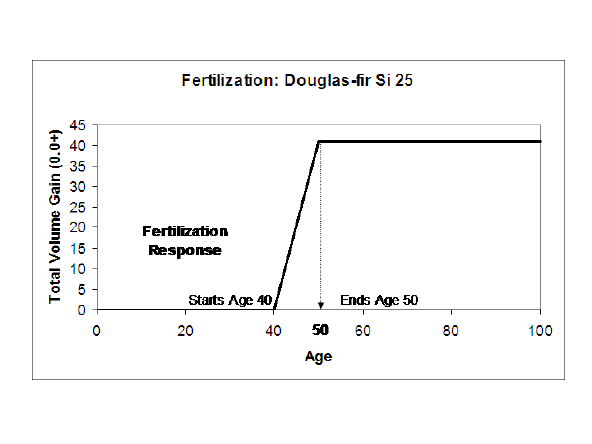
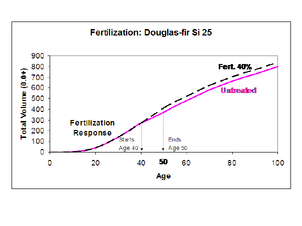

In this Topic Hide
In TASS, fertilization affects height growth and foliar efficiency - both of which contribute to an increase in volume increment. Other factors also contribute to the response in the real world, but TIPSY isn't able to accommodate these factors. Consequently, you can’t specify a particular application rate of urea, for example, and see a corresponding increase in tree size and volume per hectare. Instead, TIPSY response models provide the volume response expected in a particular stand. TIPSY then calculates the 10-year increase in top height needed to achieve the specified % increase in volume growth over 10 years.
NOTE: The following examples were developed using a previous version of TIPSY. While values (volumes, etc) may differ from the current version, the principles being illustrated remain the same.
The height growth response in TIPSY is simply the vehicle for generating a volume response. It doesn't correspond to the height growth response observed in fertilizer trials, which is usually much lower. This approach helps curb TIPSY’s rapidly expanding database. The height growth response increases at a linear rate for 10 years and is constant thereafter. For example, a height gain of 1.0 m between age 50 to 60 would be prorated as follows:
Age* |
48 |
49 |
50 |
51 |
52 |
53 |
… |
58 |
59 |
60 |
61 |
62 |
Top Ht Gain |
0 |
0 |
0 |
0.1 |
0.2 |
0.3 |
… |
0.8 |
0.9 |
1.0 |
1.0 |
1.0 |
This translates into the height/age sequence below if top height reaches 30m at age 50 and increases 1.0 m/year without treatment.
Age* |
48 |
49 |
50 |
51 |
52 |
53 |
… |
58 |
59 |
60 |
61 |
62 |
Top Height |
|
|
|
|
|
|
|
|
|
|
|
|
Untreated |
28.0 |
29.0 |
30.0 |
31.0 |
32.0 |
33.0 |
… |
38.0 |
39.0 |
40.0 |
41.0 |
42.0 |
Treated |
28.0 |
29.0 |
30.0 |
31.1 |
32.2 |
33.3 |
… |
38.8 |
39.9 |
41.0 |
42.0 |
43.0 |
A typical volume response is illustrated in the following table for a plantation of coastal Douglas-fir growing on site 25. The stand was fertilized at age 40. The Ministry response table ) shows that a gain of 50% can be expected. However, the default aerial application adjustment of 80 % lowers the response to 40%.
Age |
40 |
41 |
42 |
… |
48 |
49 |
50 |
60 |
70 |
Volume: fertilized |
272 |
287 |
302 |
… |
387 |
402 |
416 |
522 |
621 |
Volume: control |
272 |
283 |
293 |
… |
356 |
365 |
375 |
481 |
580 |
Gain (m3) |
0 |
4 |
9 |
… |
31 |
37 |
41 |
41 |
41 |
The gain in cubic meters increases for 10 years (i.e., age 40 – 50) then remains constant thereafter. The expected response of 40% can be confirmed by comparing the volumes at ages 40 and 50 as follows:
Volume response = [(416 – 272)/(375 – 272) - 1] x 100 = 40%
The similarity between the response in cubic meters and per cent is a coincidence.
Fertilization will also elevate mortality and crown cover, relative to age, because the pattern of stand development is accelerated. This in turn will affect future growth rates of other variables (e.g., diameter).
In order to achieve the additional volume growth generated by genetic gain and/or fertilization, TIPSY accelerates height growth. This method of implementing genetic gain or fertilizer is complicated by the sharp decline in standing volume after commercial thinning.
Minor anomalies can occur when commercial thinning is applied to stands with complex prescriptions. Examples are stands with multiple fertilizer applications or stands that were regenerated with improved planting stock and have one or more fertilizer applications. Under these conditions, the reported percentage gain in periodic growth of fertilized stands might not coincide with the percentage you have specified, or even the percentage identified in the table header.
Incremental gains can vary by up to three percent when fertilizer is applied after the stand is commercially thinned. However, volume growth in this period is low due to the age of the stand and the reduced number of trees. As a result, these differences are largely inconsequential relative to total volume production.
Assume you plant a stand of coastal Douglas-fir with 1600 trees/ha on site 25 and plan to fertilize it 40 years later. The upper curve in Figure 1 illustrates the response over time relative to an untreated stand when you accept the ministry's default response (50%) and effectiveness (80%). That is, the net response is 40 %.
Figure 2 shows that the total volume gain from treatment increases from 0 to 41 m3/ha from age 40 to 50, and levels off thereafter.
FIGURE 1

FIGURE 2
